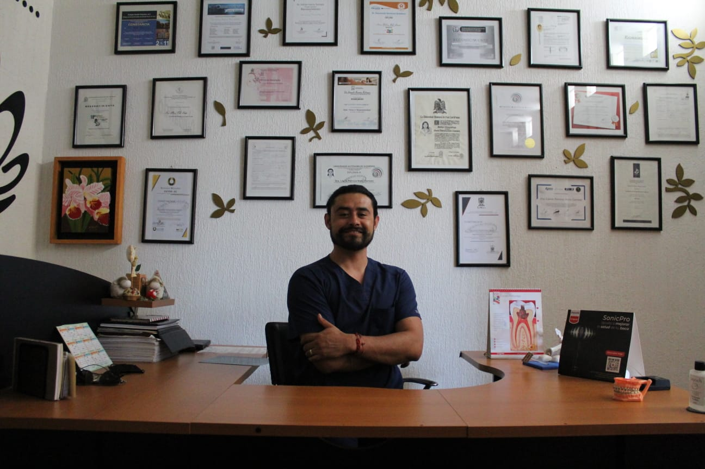

Acerca de Nosotros
Objetivo
Rehabilitar sonrisas y vidas, mediante procedimientos minimamente invasivos, para brindarles el placer de hablar, comer y sonreir sin dolor.
El consultorio dental cuenta con un muy buen equipamiento para diferentes tipos de tratamiento para tu salud bucal,
asi mismo buscando que tengas una sonrisa de la cual puedas sentirte bien.
Quienes Somos
E.M.E. Sergio Uriel Jasso Dávila
Medico Estomatólogo Graduado con honores de la Universidad Politecnica de San Luis Potosí (UASLP)
Donde nos localizamos
Amado Nervo 520, Col del Valle, 78250 San Luis Potosí, S.L.P.
Ubicación de la clínica dental en el mapa